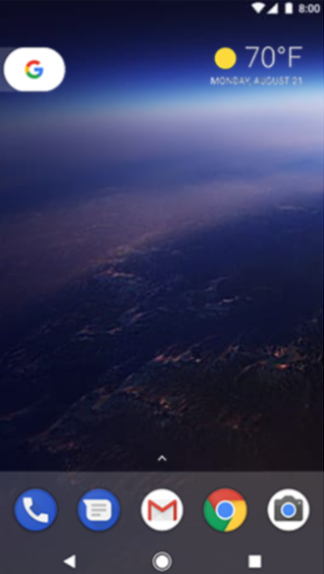
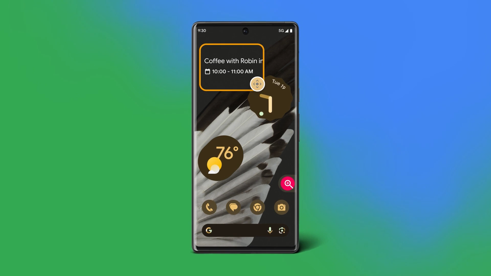
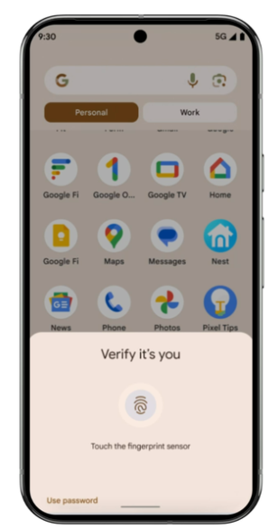
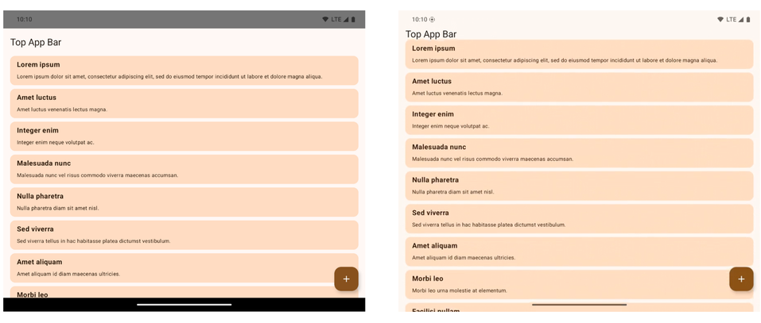

Versões recentes do Android
Android 8.0 Oreo
Lançado em 2017, o Android 8.0 trouxe uma mudança significativa na arquitetura do sistema como um todo: a adoção do Project Treble, que garantia um funcionamento modular da plataforma. Isso facilitou o ciclo de atualizações e novas interfaces de fabricantes para os diversos modelos compatíveis.
Com relação às novidades, o menu de configurações recebeu ajustes visuais para melhorar a navegação e o sistema começou a usar o Picture-In-Picture na reprodução de vídeos. É, também, o fim de uma era: os emojis em formato irregular do Android foram substituídos por novas figuras redondas, similar ao padrão de WhatsApp, iOS e outros produtos.
Android 8 foi responsável por muitas mudanças internas no sistema
Android 9.0 Pie
O Android 9.0 Pie, de 2018, é o último com nome de sobremesa e trouxe uma atualização para o Material Design. A tela passou a ser adaptada aos notches de câmera, que faziam sucesso nos aparelhos da época, mas o principal destaque visual fica por conta do menu de navegação: o painel com três botões foi substituído por um único botão na parte inferior.
O painel com tempo de uso dos apps fez sua estreia na plataforma, o que ofereceu uma forma nativa de consultar os softwares mais acessados por dia.
Androi 10
O Google preparou muitas novidades para celebrar a chegada da décima edição do Android, em 2019. O sistema recebeu um novo logo, novo mascote e novo esquema de cores, mas infelizmente abandonou os simpáticos nomes com sobremesas (eles ainda são usados internamente como codinomes de cada edição, mas o anúncio comercial conta só com os números).
Atendendo a muitos pedidos da comunidade, o Android enfim ganhou um modo escuro nativo para todo o sistema. Ainda ganhou suporte a dispositivos dobráveis, mais ajustes de permissões aos recursos do aparelho e um novo menu de navegação por gestos, removendo qualquer botão da parte inferior da tela.
Android 11
O Android 11 não teve tantas mudanças significativas, principalmente por conta do lançamento durante a pandemia em 2020, mas manteve o foco em privacidade: uma das maiores novidades foi a opção de ceder a permissão apenas uma vez a um aplicativo.
Outros destaques ficam por conta das notificações em bolhas, um gravador de tela nativo e uma aba com o histórico de todas os alertas recebidos. Vale destacar que as duas últimas funções só podiam ser usadas por app de terceiros, então o Android facilitou a vida dos usuários.
Android 12
A personalização sempre foi um dos pontos fortes do Android e o projeto levou isso a outro patamar com o Android 12, em 2021. O sistema adotou o design Material You, conhecido pelas bordas arredondadas e pelos esquemas de cores adaptáveis ao papel de parede escolhido por cada pessoa. Os widgets do Google também ficaram mais versáteis e contribuíram para customizar a tela inicial.
É uma das mudanças mais significativas na interface desde a versão 5.0, que introduziu o padrão Material Design. Outros recursos estreantes foram a captura de tela cheia e o modo de controle por uma mão só.
Android 13
O impacto do Android 13, de 2022, foi mais sentido em tablets e celulares dobráveis, com ajustes para otimizar a performance nas respectivas telas. O sistema ainda contou com um novo reprodutor de mídia e passou a solicitar permissão para cada app enviar notificações, algo que já era comum no iOS.
O suporte às cores dinâmicas do Material You aumentou e chegou a mais aparelhos, além da compatibilidade com tecnologias mais recentes, como o Bluetooth LE e o Spatial Audio.
Android 14
A atualização Android 14, lançada em 2023, deu o pontapé inicial para a chegada de IA generativa ao sistema do robozinho (que, inclusive, mudou de visual). O editor do Google Fotos ficou mais poderoso e alguns modelos ganharam uma IA para criar papel de parede, por exemplo.
O update também trouxe muitas melhorias de acessibilidade, como as notificações por flash e mais opções para aplicar o zoom na tela.
Android 14 focou em novos recursos de acessibilidade
Android 15
O Android 15 é a atual versão do sistema operacional para dispositivos móveis, com seu lançamento feito no segundo semestre de 2024. A primeira versão Beta foi lançada com algumas novidades para a nova geração do Robozinho Verde.
Algumas funções adicionadas incluem:
-
Widget na tela de bloqueio
O Android volta a incluir widgets na tela de bloqueio, função removida na versão 5.0 Lollipop, de 2014.
-
Otimização dos passkeys
Também conhecidas como chaves de acesso, as passkeys receberam melhorias com a atualização e agora podem autenticar contas com apenas um toque na tela. Vale destacar que o recurso substitui a senha tradicional por uma validação via biometria ou reconhecimento facial.
 -
Autenticação no modo de webcam
O Android 14 trouxe uma opção para usar o celular como webcam e a versão sucessora lançou um recurso adicional de segurança: ao abrir a função, é necessário autenticar a ação com biometria, PIN ou reconhecimento facial.
-
Barra de navegação mais discreta
O Android mudou a forma de visualizar apps em tela cheia no Beta: agora, a tela é expandida de ponta a ponta, ocupando os espaços anteriormente destinados à barra de navegação e à barra de notificações. O recurso ajuda a aumentar a área útl da interface do aparelho.
 -
Abrir apps com comando de voz
O Google desenvolveu uma função para abrir qualquer aplicativo do sistema com um comando de voz — atualmente, isso só é válido para o Google Assistente e outros apps do mesmo estilo, como Bixby e Alexa. A novidade permiti acessar softwares úteis sem usar as mãos, e a desenvolvedora garante que mantém a privacidade das falas no aparelho.
-
NFC com mais atualizações
Tecnologia de comunicação por aproximação, o NFC pode ganhar uma estrutura modular no Android 15, de acordo com o desenvolvedor Mishaal Rahman: isso significa que o componente pode ser atualizado a qualquer momento e não depende de um update no sistema para receber novidades. Outras tecnologias como Bluetooth e Wi-Fi já usam o mesmo padrão.
Android 15 obteve atualizações de segurança que ajudam a manter informações pessoais